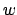
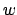

Il y a siècles, Archimède écrivit une lettre à Eratosthène qui proposait un problème concernant du bétail aux étudiants d'Alexandrie5. Voici une traduction de ce problème qui était écrit à l'origine en vers.
Si tu es diligent et sage O étranger, calcule la taille du bétail du Soleil. Ce bétail est divisé en quatre troupeaux de différentes couleurs, l'un blanc laiteux, l'autre noir luisant, le troisième brun et le dernier tacheté. Dans chaque troupeau se trouvent des taureaux, puissant en nombre suivant ces proportions: Comprends étranger, que les taureaux blancs étaient égaux à la moitié et au tiers des noirs avec l'entièreté des bruns, alors que les noirs étaient égaux à un quart et un cinquième des tachetés avec, encore une fois, l'entièreté des bruns. Remarque encore que les taureaux restants, les tachetés, étaient égaux à un sixième et un septième des blancs avec tous les bruns. Ceci étaient les proportions des vaches: Les blanches étaient précisément égales à un tiers et un quart du troupeau entier des noirs; alors que les noires étaient égales à un quart et un cinquième des tachetées, quand tous, taureaux inclus, vont pâturer ensemble. Maintenant les tachetées étaient égales en nombre à un cinquième et un sixième du troupeau brun. Finalement les brunes étaient en nombre égales à un sixième et un septième du troupeau blanc.
Quand les taureaux blancs mélangent leur nombre avec les noirs, ils tiennent bon, égaux en profondeur et en largeur. A nouveau, quand les taureaux bruns et tachetés sont rassemblés en un troupeau ils se tiennent d'une telle manière que leur nombre, commençant par un, grandit doucement jusqu'à ce qu'il complète une figure triangulaire, aucun taureau d'une autre couleur n'étant présent parmi eux ni aucun d'entre eux ne manquant.
Pour résoudre ce problème, posons , ,  et le nombre de taureaux blancs, noirs, bruns et tachetés et ,
et le nombre de taureaux blancs, noirs, bruns et tachetés et ,  , et le nombre de vaches blanches, noires, brunes et tachetées. Ces variables vérifient les équations suivantes.
, et le nombre de vaches blanches, noires, brunes et tachetées. Ces variables vérifient les équations suivantes.
Une solution du système linéaire est donnée très facilement par le logiciel Mathematica et on obtient en posant avec
que
Au minimum, Archimède a maintenant millions de tête de bétail. N'oublions pas qu'en plus le nombre
doit être un carré parfait, et puisque
Cela nous donne le sentiment que le problème posé par Archimède n'avait pas été résolu à l'époque, ou alors qui sait ?...